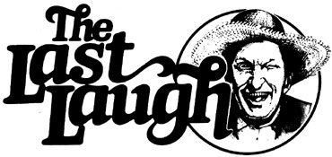

"It don't require enny edukashun tew tell the truth, but tew lie well does. "
Josh Billings
"Every man is a potential genius until he does something. "
Beerbohm Tree
Well sir, it weren't but two issues of this magazine ago that I was regalin' you folks with the hijinks of Cap'n Perc Sane, who carries on (along with the rest of the Saturday Cove crowd) ev'ry month in the pages of National Pisherman.
And, if I recall correctly, I mentioned at that time that I would let you in on another source of down-home drollery. And I meant to do so in the issue immediately followin', too. ('Course, if ev'rybody's plans always worked out like they was organized to, we'd have us a country full of millionaires and precious few folks still workin' to keep 'em all fed.) Fact is, I got so plumb tickled about the goin's on at Plumtree Crossin' last time out that I jist felt obliged to share 'em with you and, for that reason, never got back to my original story . . . so to speak. I do apologize for trippin' over my good intentions, though . . . but-as Doe Thromberg says-it's better to be late for dinner than to get there before the invite. Anyways, I aim to make up for my little detour here and now.
That other storehouse of real honest humor that I mentioned two MOTHERS back is snug between the covers of a coupla books by a feller named David M. Newell. These volumes (If Nothin' Don't Happen and The Trouble of It Is, Alfred A. Knopf, Inc.) chronicle the life and times of selfproclaimed "Florida Cracker", Billy Driggers. And believe me. That life (and them times) is funny enough in spots to make you kick yer giggles in the teeth with a horselaugh.
Howsomever that may be, I do hafta admit that when I showed these books around at the Crossin', sev'ral members of the Truth and Veracity League's distaff division claimed to be purely scandalized by 'em. Sadie McCannon even went so far as to aver that a lot of the writin' in the stories was "risk-A". Her husband Cleedy (who'd brayed like a spring mule most of his way through the books) responded that it didn't matter to hire whether them anecdotes were risk-A, B, or C . . . and that even a snappy turtle knows you got to stick yer neck out once in a while iffen you hope to get anythin' worthwhile accomplished.
I s'pose, though, that the best thing fer me to do would be to let you judge the merits of Mr. Newell's books fer yerselves. So I Will.
The Trouble of It Is begins, in a natural fashion, at the beginnin', with Billy Driggers doin' a little clamberin' through the branches of his fam'ly tree. That tree, the comical Cracker tells us, pretty much took root "way back in the days when most people were children. . .", which was at about the point that ". . . Jeremiah Epps came over from England and settled near Front Royal, Virginia".
This Jeremiah, you see, was Billy's maternal great-grandpap. He passed on the family leadership to his son, Zeb Epps, who (we're told) had "feet so big he got skeered of his own track when he seen it in the snow".
Billy spends considerable time recallin' his ancestors, and he surely seems to have more of 'em worth notin' than could be called one man's rightful share. Or, as the narrator puts it himself: "When I think back and try to keep track of all the Eppses, let alone the Driggerses, I just get out more wicks than I can keep fire on."
A goodly number of them wicks do get lit, howev'r, with Billy's cousin Staunton bein' a case in point.
"Staunton Epps had never been too bright, and when he were near 30 years old he went crazier than an outhouse rat and had to be sent off."
Ol' Staunton, as we learn directly, got cured in a coupla years and came back home. Directly upon his arrival the old boy decided to spruce up a bit, and-while he was shavin'-he heard the dogs kickin' up a ruckus out back. Staunton went out to check on them hounds, and as soon as he was out the door the shavin' mirror fell off the wall and slid down behind his washbasin. Which, of course, means that when the unfortunate Epps came back in-with that straight razor still in hand-he saw nothin' but the blank wall in front of his face.
"Jist my luck," he said, "my very first day back and already I've cut my damn head off."
Of course, most of this fam'ly history sorts, percolated down from one relative to another. And, as the book goes on and Billy starts apicin' up the genealogy with local happenin's and tales of folks that he knew hisself, things really get to jumpin'.
Fer instance, Driggers tells about this blind feller who was goin' across the street with his seein' eye dog. Seems that a "lady dog in season" (as the delicate Billy puts it) strolled past, and the blind man's dog up and took after her . . . leavin' the poor feller in the middle of a busy thoroughfare. Well sir, a coupla strangers helped the sightless gent to the sidewalk, and they was jist finishin' up their "thank you's" and "'twas nothin's" when that runaway dog strutted back up with a grin like a possum in peach time. Driggers goes on to tell what happened:
"The blind man up and reached into his pocket and got a cookie and started to feed the animal.
" 'What are you goin' to do?' somebody asked. 'Reward that dern dog for runnin' off?'
" 'No,' the blind feller told him, 'I'm just tryin' to find out which end is his head so I can kick his butt! ' "
Now, it seems as if a healthy share of Billy's best stories concern the antics of his Uncle Winton, who-the narrator allows-was a bit of a drinker. In fact, Driggers says:
"Every now and again Uncle Winton would get on a regular spree and stay liquored up for a week or more . . . and even old Doc Joyner got aggravated when Aunt Effie phoned him one day and said Uncle was drunk again and had took a big swig of kerosene from the wrong jug.
" 'What should I do for him?' she wanted to know.
" 'Stick a wick in him and light him,' Doc told her.
" 'Down his throat?'she asked.
" 'Anyway,' Doc said, 'just so it gets to the kerosene.' "
As you can see from these samplin's, Billy's creator David Newell is plumb fulla stories, and he can make them words twist like a tail-held lizard so's they most always come out amusin'. In fact, there's one more Driggers story that's jist naggin' at my funny bone like a redbug bite, so's I might as well git it told.
It seems that there were this feller who was payin' a farmer five dollars a month to pasture his cow . . . as it happened, though, that man never did git around to payin' his bill.
After more'n a year, the farmer decided to collect his due.
"I just ain't got the money," the cow owner said.
"Well, you owe me ninety dollars," the farmer told him. "Why don't I just take the cow for the bill?"
The other feller thought this over fer a spell, and pretty soon a big pieeatin' grin spread itself across his face.
"Seems like to me that cow should be worth more'n that," he said. "You go ahead and pasture her three months more and it's a deal."
When I read that one to of Ott down at the Crossin', he chuckled around his 'baccy for a spell before speakin'.
"That recollects me of a gentleman name of Lionel Cantrell, way back in nineteen and twenty-four. . ." Ott began.
But I'll save that partic'lar story fer another time.
"If a man has freedom enough to live healthy, and to work athis craft, he has enough . . . and so much all can easily obtain. "
Goethe
"Let us give Nature a chance . . . she knows her business better than we do. "
Montaigne
|
 |
|
|